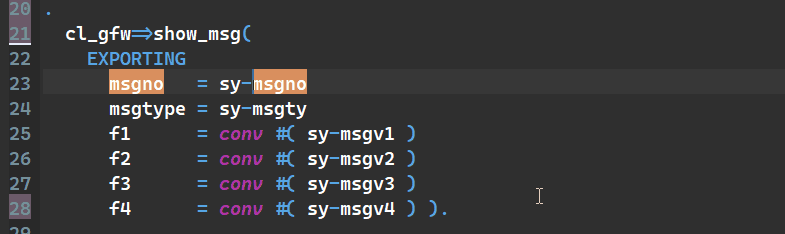

ABAP Quick Fixes - Omit Exporting in Method Call
If you have addition EXPORTING in the method call and no other like CHANGING, IMPORTING, RECEIVING, then you can get rid of this EXPORTING addition easily.
